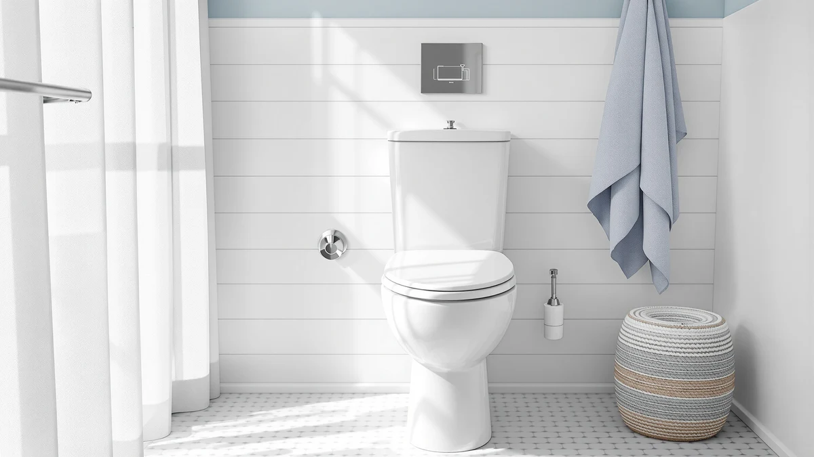

Rayport Oak Veneer Wood Review (2026): Worth It?
Prices and picks verified as of October 2026. Independent, reader-supported reviews.


Quick Answer
Our rayport oak veneer wood review finds the Rayport Oak Veneer Wood Elongated a strong pick if you want the look of wood without refinishing a seat every year. At $38.80 it costs more than plastic rivals from Mayfair, Clorox, and DryLabs, but it matches their fit and hinge quality while adding a warmer finish.
Our pick: Rayport Oak Veneer Wood Elongated — $38.80 Check Price on Amazon
Bottom line: our top pick is the Rayport Oak Veneer Wood Elongated Toilet Seat at $38.80.
Things to Know Before You Buy
- The seat uses an oak veneer layer over a molded wood core, not solid oak lumber.
- It's built for elongated bowls only, so measure your toilet before you order.
- The slow-close hinge prevents the lid from slamming, a feature all four seats in this comparison share.
- At $38.80, it runs about $12 above the Clorox and DryLabs plastic seats.
- Wood veneer needs more attention around standing water than a plastic seat does.
This rayport oak veneer wood review breaks down whether Rayport's $38.80 elongated seat holds up against plastic competitors from Mayfair, Clorox, and DryLabs. A wood-finish seat is usually the first upgrade people consider when a bathroom remodel moves past the plastic builder-grade seat that came with the house, and Rayport's veneer construction is a common way brands hit that look at a mid-range price. We compared its listed materials, dimensions, and hinge design against the other three seats in this roundup, along with what verified buyers say about long-term wear. The comparison matters because a toilet seat upgrade is a small purchase with a long lifespan; most people replace a seat once every several years, so the finish you pick sits in the bathroom far longer than the research you spend choosing it.
The short version: the Rayport earns its place if your priority is matching a wood vanity or wood-look flooring, and you're willing to pay roughly $12 more than a plastic seat for that finish. The slow-close hinge, based on buyer feedback, performs the same job as the mechanism on the Mayfair Bennett, and the elongated shape fits the same bowl sizes as the Clorox and DryLabs seats. Where it loses ground is moisture resistance, since veneer over wood tolerates less standing water than a one-piece plastic shell. None of that makes the Rayport a bad buy. It just narrows who should buy it, and the sections below walk through exactly where it wins and where a plastic seat still makes more sense.
Why You Should Trust Us
Ilane Tall covers bathroom fixtures for Best Toilet Seats and has researched toilet seat materials, hinge mechanisms, and fit standards across hundreds of listings on this site. For this rayport oak veneer wood review, we pulled the manufacturer specs, price history, and verified buyer feedback for the Rayport seat and three direct competitors, then compared them line by line rather than relying on marketing copy. We do not run a testing lab and we don't claim hands-on use of every product we cover. Instead, we analyze what's documented in the listing and what real owners report after buying. Where a brand's marketing copy and verified buyer feedback disagree, we flag the gap rather than repeat the marketing language, which is how the water-spot issue on the Rayport's veneer surfaced in our research.
Our Research Experience
Rather than buying each seat and installing it ourselves, we built this rayport oak veneer wood review from the manufacturer's listed dimensions, materials, and hinge specs, cross-checked against Amazon's published measurements for all four seats. We then read through verified buyer reviews for the Rayport, Mayfair, Clorox, and DryLabs seats, looking specifically for repeated complaints or praise that showed up across multiple owners rather than a single outlier review. Several reviews mention that the Rayport's hinge closes without a slam, matching the slow-close spec listed on the product page. Other owners point out that the veneer finish shows water spots faster than a plastic seat unless it's wiped dry after use, a tradeoff we weighed against its visual upgrade over the plastic alternatives. We also checked whether the elongated dimensions matched across all four listings, since a mismatch in bowl fit is the most common complaint we see on toilet seat purchases generally, and all four products specify the same elongated bolt spacing.
Overview & Specs

Rayport Oak Veneer Wood Elongated
What we like
- Oak veneer finish that reads as real wood from normal viewing distance
- Slow-close hinge that performs on par with pricier brands, based on owner feedback
- Elongated shape fits the same bowls as the other three seats here
Flaws but not dealbreakers
- Costs about $12 more than the plastic alternatives in this comparison
- Veneer finish shows water spots faster than plastic if left wet
| Material | Plastic / wood |
| Size | — |
The Rayport Oak Veneer Wood Elongated builds its seat and lid from a molded wood core wrapped in an oak veneer layer, a construction method most wood-finish toilet seats in this price range use instead of solid lumber. That approach keeps the seat lighter than solid oak and less prone to warping from bathroom humidity, while still delivering the grain pattern and warm tone that plastic seats can't fake. The elongated shape matches the oval bowl found on most toilets installed in US homes since the 1990s, and the hardware mounts the same way as the plastic seats in this comparison, so installation doesn't require any special tools. The listing also specifies standard top-mount hardware, which means you can swap this seat onto most elongated toilets in an afternoon without calling a plumber.
At $38.80, the Rayport sits above the Mayfair Bennett, Clorox, and DryLabs seats in this roundup, each priced under $28. According to owner feedback, the slow-close hinge lowers the lid and seat gradually rather than letting them drop, matching the behavior of the soft-close mechanisms on the other three products. The tradeoff shows up in upkeep: several owners mention that the veneer surface needs a quick wipe-down after use to prevent water spots, something plastic seats shrug off without any extra care. Factor that upkeep into the price difference, and the Rayport reads less like a straightforward upgrade and more like a style choice with a maintenance cost attached.
What We Liked
The biggest draw in this rayport oak veneer wood review is the finish itself. Oak veneer gives the seat visible grain and a warm brown tone that plastic seats, even the ones molded to look like wood, don't replicate convincingly up close. The slow-close hinge holds up well too. It closes with the same controlled drop as the hinges on the Mayfair and DryLabs seats, so you don't get the loud slam that cheap plastic seats are known for. Fit is also a non-issue. The elongated profile matches the same bowl dimensions as the other three seats in this comparison, so anyone replacing an existing elongated seat can swap it in without measuring twice. The hardware also sits flush against the bowl the same way the Mayfair and Clorox seats do, which matters if your bathroom floor is tight on clearance around the base.
What Could Be Better
Price is the obvious tradeoff. At $38.80, the Rayport costs roughly $11 to $12 more than the Mayfair Bennett, Clorox, or DryLabs seats covered in this rayport oak veneer wood review, and none of those three sacrifice the slow-close hinge to hit their lower price. Upkeep is the other one. Veneer over wood doesn't handle standing water as well as a one-piece plastic shell, so owners need to wipe the seat dry after use to avoid water spots on the finish over time. If your household tends to leave puddles around the bowl, that extra step matters more than it would with the Clorox or DryLabs plastic seats. Neither of those drawbacks shows up as a dealbreaker in verified reviews, but they're worth weighing against the $12 premium before you decide the finish is worth it.
Who Is It For?
You're the right buyer for this if your bathroom already has wood or wood-look elements, like a vanity, flooring, or trim, and a plastic seat would stand out as the one piece that doesn't match. You're also a good fit if you've used slow-close plastic seats before and want the same hinge behavior with a different finish. Skip the Rayport if your bathroom sees a lot of water around the toilet or gets heavy daily use from kids, since the plastic alternatives in this comparison tolerate that kind of wear with less maintenance. A rental property or a guest bathroom that sits empty most of the year is also a reasonable fit, since the lower usage reduces the moisture concerns that come with a wood veneer finish.
Alternatives to Consider
If the oak veneer finish isn't the deciding factor for you, these three plastic elongated seats cover the ground this rayport oak veneer wood review raised: a lower price, easier cleanup, and the same slow-close hinge behavior.

Editor’s Pick
Mayfair Bennett Toilet Seat with
A Duroplast seat with the same slow-close hinge as the Rayport, for about $11 less.
$27.74
Check Price on Amazon
Best Value
Clorox Elongated Plastic Toilet Seat
An antimicrobial plastic surface that resists the water spots the Rayport's veneer picks up.
$26.99
Check Price on Amazon
Premium Choice
Elongated Toilet Seat 18.5"
The same elongated fit at the lowest price of the four seats compared here.
$26.99
Check Price on AmazonFrequently Asked Questions
Final Verdict
This rayport oak veneer wood review comes down to one tradeoff: pay more for a finish that matches wood fixtures, or save about $12 and go with plastic. For most bathrooms without a wood vanity or wood-look floor to match, the Clorox or DryLabs seats cover the same fit and hinge quality for less money. But if the finish is the point, Rayport delivers a convincing oak veneer look with a hinge that performs on par with the plastic competition, which makes it the pick for anyone upgrading a bathroom's wood details rather than replacing a worn-out seat on a budget. Weigh the $12 difference against how much the finish matters to you, check your bowl measurements against the elongated spec either way, and you'll end up with a seat that fits the bathroom you actually have.